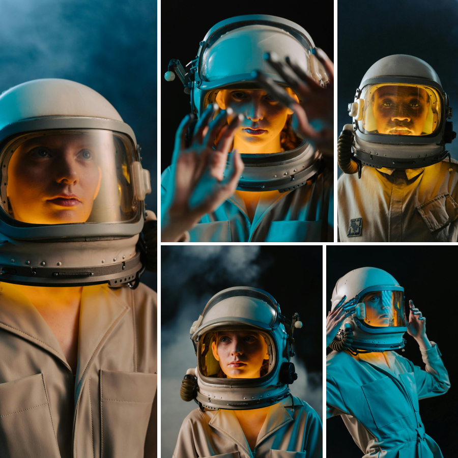
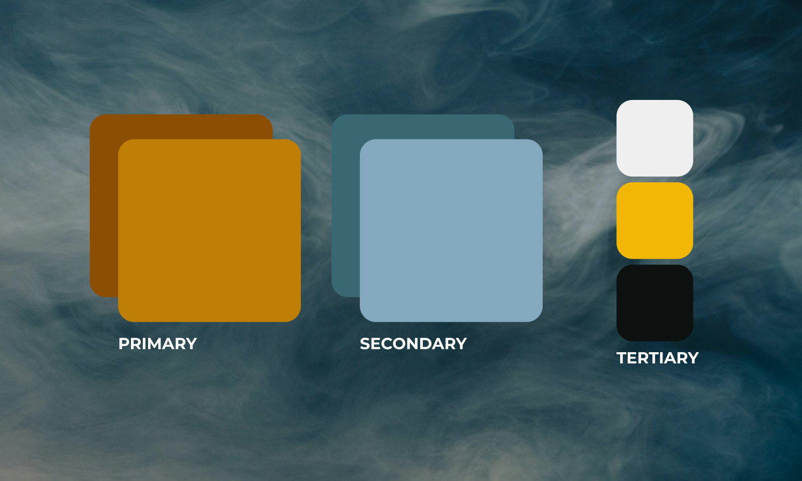
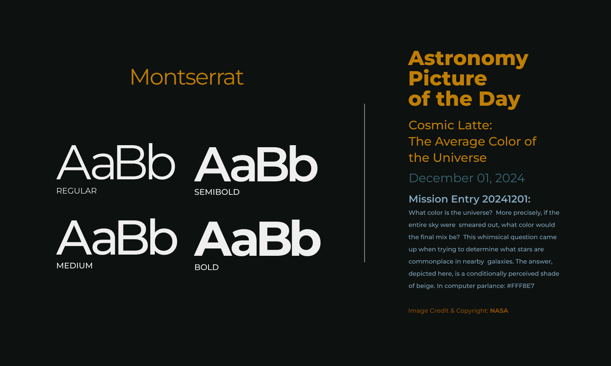
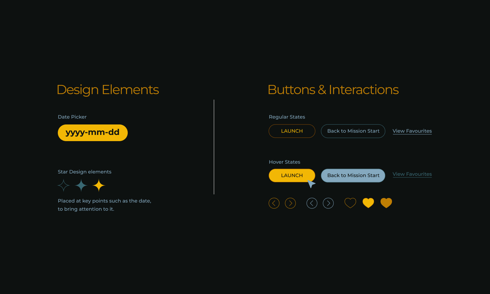
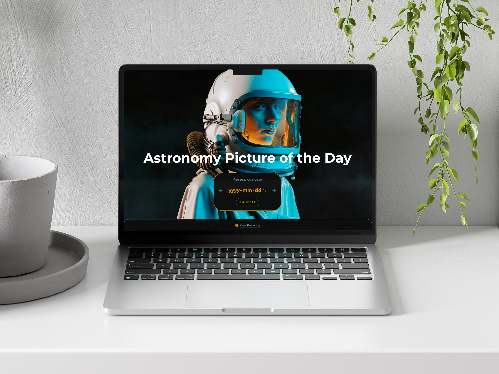
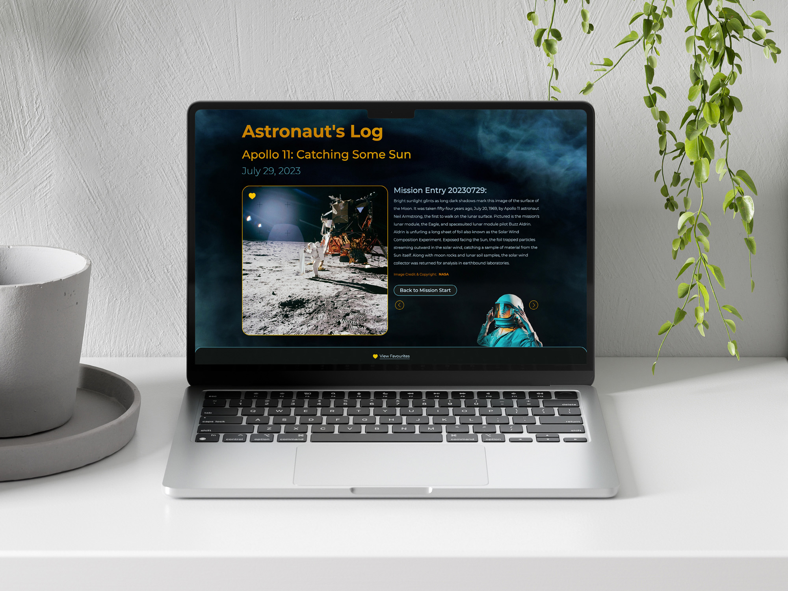
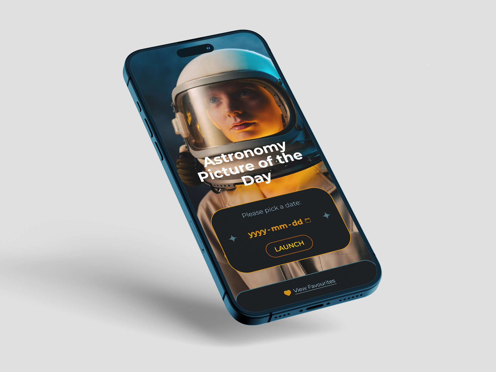
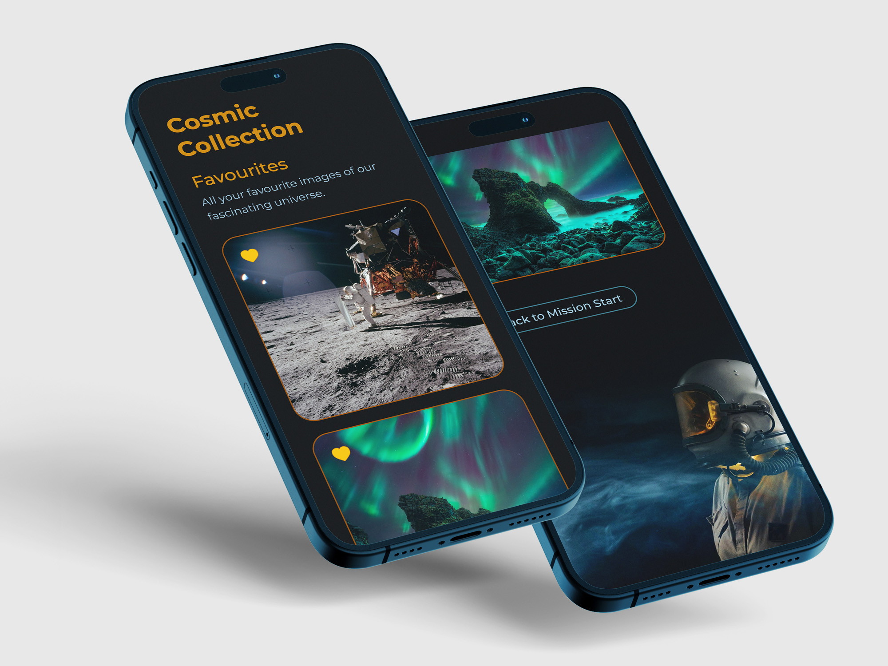

Astronomy Picture of the Day App
For a Web Development assignment, I created a web app that would fetch the Astronomy Picture of the Day from NASA's API along with a description and a title.
Process:
I made it my goal to design an immersive experience, using my Art Direction skills to establish a cohesive visual style that makes users feel like astronauts on a space mission—going beyond simply displaying NASA's content.
Current Site:
The current NASA APOD site is rendered in basic HTML and lacks a modern, immersive experience that reflects the awe and effort behind space exploration and the magnificence of the universe.
Developed Site:
From interface to navigation, the web app is designed to be futuristic with a dark theme and micro animations. The idea was to make the user browse through an astronaut's daily log on their space mission.
Tools:
- Adobe Creative Suite
- Figma
- Visual Studio Code
My Role:
- Art Direction
- UX & UI Design
- Web Development
Timeline:
- Concept & Visuals: 1-2 weeks
- UI Design: 1-2 weeks
- Development: 3-4 weeks
Imagery:

While ideating and referencing, I discovered a photo shoot portraying a futuristic and stylish astronaut. The cinematic color palette, combined with soft smoke and surreal lighting, created a dream-like ambience.
This was the mood I wanted for my project and I began to draw inspiration from it.
Colour Palette:

Keeping in mind the darker visuals, I picked dull versions of the main colours in the astronaut images for the UI:
The mustard orange and brown would highlight primary UI elements and buttons, whereas the blues would highlight secondary actions and the super-dark greyish blue background would ensure these colours stand out.
Typography:

With a dark ambience and darker visuals, the typography had to be kept simple and legible.
Montserrat solved both legibility as well as appearing as a clean modern font that I felt represented an informative NASA/ space-exploration personality.
UI Elements:

The UI elements were kept simple with clean outlines to mimic a futuristic and modern look.
The Design & Highlights of the stars and date are used to bring attention to the launch controls. The Buttons & Toggles showcase hover and toggle states which are further enhanced by micro animations.
Final:

The images can also be saved to a favourites section. Later, even if the user closes the browser, the favourited images will still be available when they return.

Mobile:


Thank you for scrolling till the end.